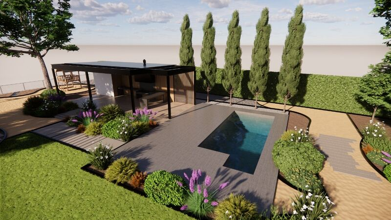
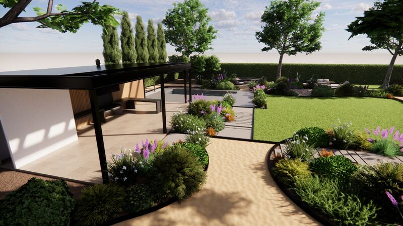

Construcción y obras exteriores
Quinchos, terrazas, piscinas, muros de contención, accesos y más: ejecutamos obras residenciales, comerciales y exteriores.
Obras que integran construcción y paisaje
Ejecutamos obras nuevas, ampliaciones, remodelaciones y proyectos de habilitación exterior.
Contamos con un equipo técnico y operativo que nos permite abordar las distintas etapas de una obra, desde su planificación hasta su ejecución, coordinando las especialidades necesarias para su desarrollo.
Trabajamos con atención al detalle y materiales cuidadosamente seleccionados, buscando soluciones duraderas.
Qué construimos
- Quinchos y terrazas
- Piscinas y espacios recreativos
- Ampliaciones y remodelaciones
- Bodegas y construcciones complementarias
- Estacionamientos y accesos
- Caminos, pavimentos y soleras
- Muros, pircas y obras de contención
- Decks, pérgolas y estructuras exteriores
- Preparación y habilitación de terrenos
Cómo trabajamos
- Visita técnicaRevisamos el terreno, sus condiciones y lo que necesitas construir.
- Proyecto y presupuestoDefinimos soluciones constructivas, materiales y alcance de la obra.
- EjecuciónConstruimos con equipo propio, coordinando las especialidades necesarias.
- EntregaEspacios terminados, funcionales y pensados para perdurar.
Preguntas frecuentes
¿Construyen quinchos y piscinas?
Sí. Construimos quinchos, terrazas, piscinas y espacios recreativos, integrándolos con el jardín y el resto del espacio exterior.
¿Hacen muros de contención y escaleras en terrenos con pendiente?
Sí. Ejecutamos muros, pircas y obras de contención, escaleras y preparación de terrenos. Puedes ver ejemplos en la galería de esta página.
¿Ejecutan proyectos diseñados por otros profesionales?
Sí. Trabajamos tanto en proyectos integrales como en partidas específicas, incluyendo la ejecución de proyectos diseñados por terceros.
Proyectos
Parte de nuestro trabajo.




